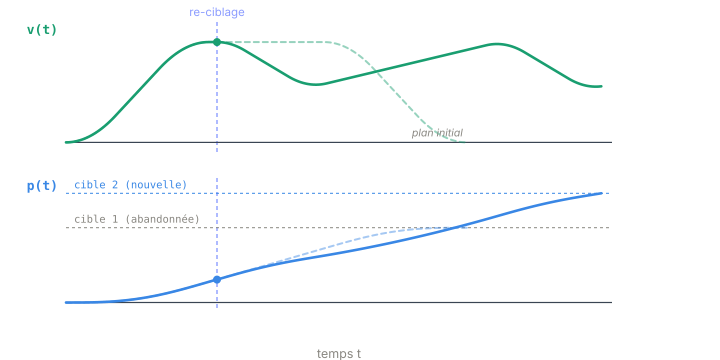

Chapitre 08
En ligne : freinage, re-ciblage, temps réel
Objectifs du chapitre
- Comprendre le re-ciblage à la volée : changer de cible à chaque cycle sans rompre la continuité.
- Voir pourquoi replanifier depuis l'état courant garantit une continuité C² — aucun saut de consigne.
- Saisir le rôle de la pré-phase de freinage quand l'état initial est hors limites.
- Découvrir l'interface vitesse et les contraintes du temps réel sur automate (WCET borné).
1. Re-ciblage à la volée
C'est ici que le « O » d'OTG (Online Trajectory Generation) prend tout son sens. Jusqu'ici on a calculé une trajectoire vers une cible. Mais en fonctionnement réel, la cible peut changer à n'importe quel cycle : nouvelle consigne opérateur, retour capteur, correction de l'automate maître. Ruckig ne cherche pas à raccorder deux trajectoires anciennes : à chaque cycle, il replanifie intégralement depuis l'état courant (p, v, a) vers la cible du moment.
La conséquence est décisive. Comme la nouvelle trajectoire démarre exactement là où l'axe se trouve — même position, même vitesse, même accélération — la consigne reste continue en position, en vitesse et en accélération. C'est la continuité C² : aucun saut de consigne, donc aucun à-coup de jerk, même si la cible bascule brutalement d'un cycle à l'autre.

💡 Intuition. Un GPS qui recalcule l'itinéraire quand vous ratez une sortie ne vous téléporte pas au bon endroit : il repart d'où vous êtes. Ruckig fait pareil à chaque cycle. La trajectoire n'est jamais figée ; elle n'est qu'un plan valable jusqu'au prochain cycle, systématiquement réévalué depuis l'état réel.
🔧 Dans ruckig-scl. Le mécanisme repose sur pass_to_input : à la fin de chaque cycle, il
recopie l'état de sortie (position, vitesse, accélération atteintes) vers l'entrée du cycle suivant.
Le calcul suivant part donc de l'état réellement atteint, jamais d'une consigne théorique — c'est ce qui autorise
le re-ciblage à la volée avec continuité C², sans le moindre saut de consigne.
2. La pré-phase de freinage
Un profil normal suppose un état de départ dans le domaine faisable : |v₀| ≤ vₘₐₓ et |a₀| ≤ aₘₐₓ. Or il arrive que ce ne soit pas le cas — typiquement au premier enable alors que l'axe bouge déjà plus vite que vₘₐₓ, ou avec une accélération excédentaire. On ne peut pas démarrer un profil standard depuis un tel point : il faudrait déjà violer les bornes.
Ruckig insère alors une pré-phase de freinage : un sous-profil qui, en respectant jₘₐₓ, ramène l'état dans le domaine faisable (retour sous vₘₐₓ et aₘₐₓ). Une fois l'état redevenu admissible, on enchaîne avec le profil normal vers la cible. La trajectoire complète est donc « freinage → profil à 7 segments ».
⚠️ Piège. Ne pas confondre cette pré-phase avec un simple arrêt d'urgence. Elle ne stoppe pas l'axe : elle le rend gouvernable avant de reprendre la planification. Oublier ce cas, c'est risquer un profil calculé depuis un état interdit — donc infaisable dès le premier segment. En multi-axes, le freinage se calcule par axe, avant la synchronisation : chaque axe doit d'abord rentrer dans son domaine faisable, ensuite seulement on cherche une durée commune.
3. L'interface vitesse
Toutes les cibles ne sont pas des positions. Pour du jog (déplacement manuel continu) ou du suivi de
vitesse, on veut atteindre et tenir une vitesse cible, sans point d'arrivée en position. C'est le rôle de
l'interface vitesse (IFACE_VELOCITY) : le profil vise v_f plutôt
que p_f, toujours en limitant le jerk pour une transition douce.
∑ Le calcul. Le problème est plus simple qu'en mode position : la contrainte sur p_f disparaît. Il ne reste qu'à amener la vitesse à sa cible avec la bonne accélération finale, sous jerk borné — un sous-ensemble du profil en S, sans le segment qui « consomme » la distance restante.
4. Le temps réel sur automate
Un OTG doit boucler à chaque cycle de l'OB cyclique. Ce n'est utilisable que si son pire temps d'exécution (WCET) est borné et prévisible. Toute l'architecture de Ruckig vise cet objectif : forme fermée (Cardano, Ferrari — pas d'itération non bornée), pas d'allocation dynamique, accès mémoire optimisés. Le coût n'est jamais « en moyenne rapide » : il est borné dans tous les cas.
⏱️ Temps de cycle. En régime établi (sans re-ciblage), un cycle coûte environ 30 appels FC et 0 racine carrée. Le pire cas — re-ciblage complet sur 4 axes — monte à 368 appels FC et 150 racines carrées. La cible de performance est < 2 ms sur PLCSIM Advanced FW V3.0+. L'important n'est pas le chiffre moyen mais le plafond : dans un OB cyclique, c'est le pire cas qui doit tenir dans le budget de temps, sans quoi le cycle déborde.
🔧 Dans ruckig-scl. Le re-ciblage repose sur pass_to_input ; la pré-phase de freinage sur
ComputeBrakeProfile (déclenchée quand |v₀| > vₘₐₓ ou
|a₀| > aₘₐₓ, par axe avant synchronisation) ; le mode vitesse sur
IFACE_VELOCITY (via ComputeVelBlock1Axis / ComputeVelProfileTimed). Le tout
s'expose derrière une interface PLCopen à enable continu : enable / valid / busy / done / error,
avec un status détaillé (codes DA014). La forme fermée garantit un coût borné et
déterministe, sans allocation dynamique.
// SCL — boucle en ligne, appelée à chaque cycle
IF enable THEN
ComputeBrakeProfile(input); // pré-phase si état hors limites
Update(input, output); // replanifie depuis l'état courant
pass_to_input(output, input); // sortie -> entrée du prochain cycle
END_IF;Récapitulatif du chapitre
- Ruckig replanifie depuis l'état courant à chaque cycle : re-ciblage à la volée, continuité C², aucun saut de consigne (
pass_to_input). - Une pré-phase de freinage ramène un état initial hors limites dans le domaine faisable avant le profil normal (
ComputeBrakeProfile, par axe en multi-axes). - L'interface vitesse (
IFACE_VELOCITY) vise une vitesse cible : jog, suivi de vitesse. - Le WCET borné (forme fermée, pas d'allocation) rend l'algo compatible d'un OB cyclique : ~30 FC en régime établi, 368 FC / 150 sqrt au pire cas 4-DoF, cible < 2 ms.
Le fil rouge du cours
- Pourquoi limiter le jerk : un profil trapézoïdal impose des sauts d'accélération (jerk infini) → chocs, usure, oscillations. Borner le jerk lisse le mouvement.
- Le profil en S à 7 segments : jerk constant par morceaux (±jₘₐₓ, 0), qui donne un profil d'accélération trapézoïdal et une vitesse en S.
- Les familles : selon que les plateaux d'accélération et de vitesse sont atteints ou non, le profil prend différentes formes canoniques.
- Step 1 — temps-optimal : pour un axe, durée minimale t_min par résolution en forme fermée, et le Block (t_min + intervalles bloqués).
- Step 2 — durée imposée : ré-cadencer un axe pour qu'il dure exactement une durée cible.
- Synchronisation multi-axes : choisir une durée commune qui évite les intervalles bloqués de chaque axe, puis ré-cadencer chacun (Step 2).
- Exécution en ligne : re-ciblage continu, pré-phase de freinage, et un WCET borné qui rend le tout temps réel sur automate.
Ce cours accompagne le dépôt ruckig-scl : un portage SCL fidèle de l'algorithme, validé numériquement contre le vrai Ruckig — pour exécuter une génération de trajectoire limitée en jerk directement sur un automate Siemens.